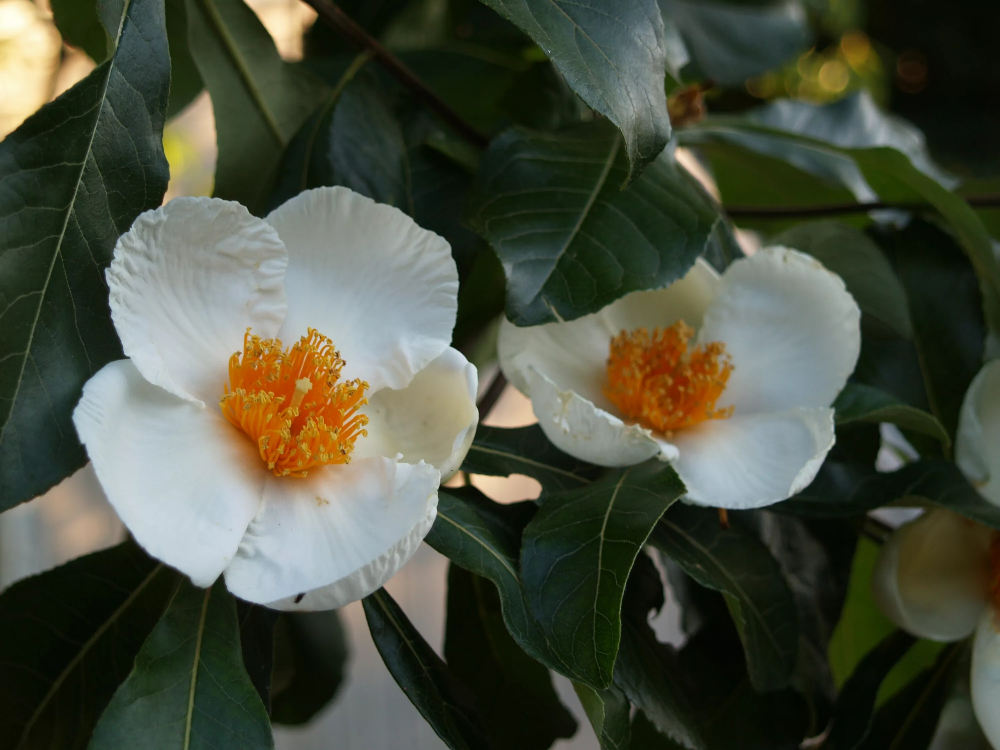
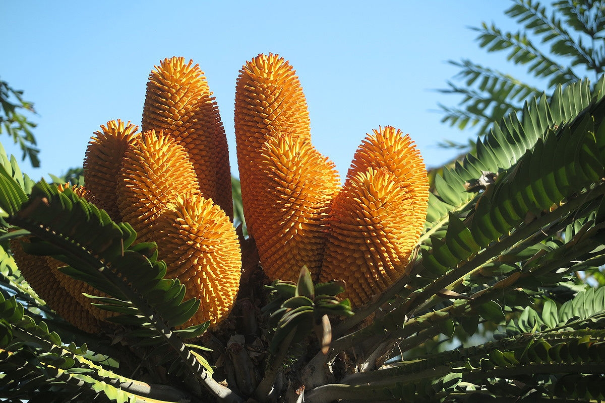
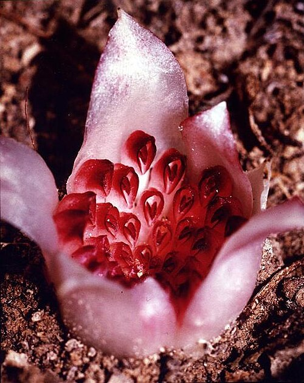

Энциклопедия исчезнувших растений
Подробные сведения о видах, которые мы потеряли или скоро можем потерять

Франклиния алатамаха
Семейство: Tea family (Theaceae)
Ареал: Джорджия, США (долина реки Алатамаха)
Последнее наблюдение: 1803 год
Причина: Заболачивание, сбор коллекционерами
Интересно: Все современные растения – потомки одного экземпляра, выращенного садоводами.

Энцефаляртос Вуда
Семейство: Замиевые (Zamiaceae)
Ареал: ЮАР, лес Нгойе
Последнее наблюдение: 1916 год (единственный мужской экземпляр)
Причина: Вырубка лесов, сбор растений
Интересно: Женских особей не найдено, размножается только вегетативно в ботанических садах.

Ризантелла Гарднера
Семейство: Орхидные (Orchidaceae)
Ареал: Западная Австралия
Последнее наблюдение: 1928 год (больше не находили)
Причина: Изменение местообитаний, сбор
Интересно: Цветёт под землёй, опыляется муравьями и термитами.